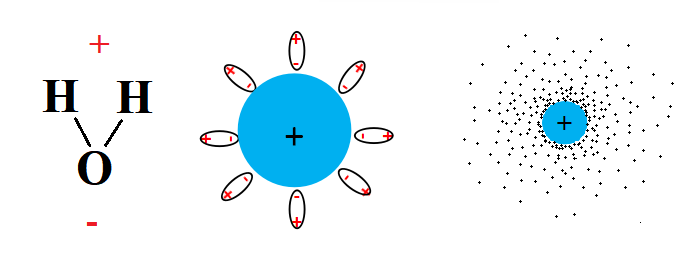
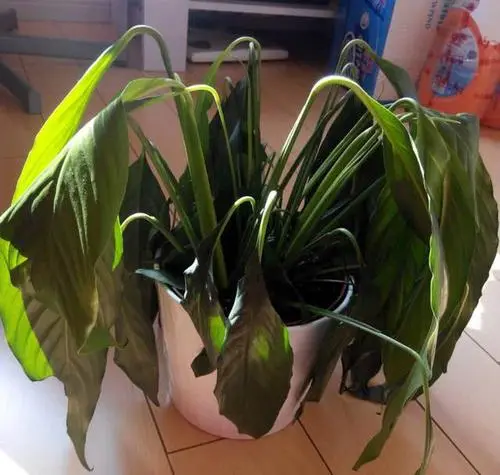
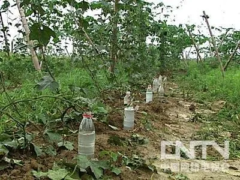

高中生物竞赛讲义 · 集训营
第九章 植物的生命活动
章节总纲 · 一、植物体的水分代谢
📅 整理日期: 2026年7月4日
一、植物体的水分代谢
植物体的水分代谢包括：植物体对水分的吸收、运输、利用和散失。根系是吸收水分的主要器官，尤其是根尖的根毛区吸水能力最强。水分子过膜主要是通过水通道蛋白的协助扩散来完成的。
水分代谢四环节：吸收→运输→利用→散失。根毛区是吸水主战场，水通道蛋白（aquaporin）是竞赛新考点。
水势（ψw）：衡量体系水分能量状态的物理量，规定纯水的ψw=0，溶液或细胞因溶质和负压而使水势为负值。水分总是从水势高处向水势低处移动。典型公式：ψw = ψs + ψp + ψg + ψm，其中ψs为溶质势（负值，溶质越多越负）、ψp为压力势（膨压为正，张力为负）、ψg为重力势、ψm为衬质势。
植物体内水势梯度：土壤水势 > 根毛细胞 > 皮层 > 木质部 > 叶片细胞 > 大气。正是这一梯度驱动水分从土壤经根、茎、叶到达大气。
水势考点：纯水ψ=0；溶质使ψ降低；压力势可正可负；水移动看Δψ，不单独看某一分项。土壤→根→茎→叶→大气，水势逐级降低。
根系吸收水分有两种方式：被动吸水（蒸腾拉力）和主动吸水（根压）。一般情况下，被动吸水是植物吸水的主要方式。
被动吸水vs主动吸水：前者靠蒸腾拉力（物理过程），后者靠根压（生理过程）。白天以被动吸水为主，夜晚主动吸水占优势。
被动吸水的主要动力是蒸腾拉力。蒸腾拉力产生的原因是叶片的蒸腾作用引起了叶细胞水分亏缺，水势下降并与相邻细胞之间形成了水势差，结果使茎及根部细胞水势下降，从而促使根部细胞从土壤中吸收水分。
被动吸水的动因不在根内，蒸腾拉力才是被动吸水的动因。在蒸腾作用强时，被动吸水是植物吸水的主要方式。只是在蒸腾强度弱（如夜晚或春季叶片尚未展开）时，或者当蒸腾作用受抑制时，蒸腾拉力导致的被动吸水才不占主要地位。
蒸腾拉力是水分上升的最主要动力。理解"蒸腾→叶细胞水势下降→茎→根→土壤"的水势梯度链。
仅由根系代谢活动而引起的根系从外界环境吸水的过程叫主动吸水。
伤流和吐水：空气湿度大、土壤水分充足时，叶尖（如小麦）或叶缘（如番茄）有向外溢出液滴的现象叫吐水。把生长旺盛的植株从近地面砍断，残茎伤口会向外溢出汁液，叫伤流。吐水可作为壮苗的一种生理指标。
根压：茎部切口处套上橡皮管与压力计相接，表现一定的压力，此压力称为根压。大多数植物的根压不超过0.1～0.2 MPa。0.2 MPa的根压可促进水上升20.4 m高。
主动吸水的生理基础是根的内皮层存在凯氏带。凯氏带将根的质外体分隔成内外两部分，根吸收的矿质离子进入中柱必须通过内皮层细胞的主动运输，造成内皮层内外水势差，水分从水势高的内皮层以外渗透到水势较低的中柱导管内。
凯氏带（Casparian strip）是内皮层细胞壁上的一条带状加厚，富含木质素和木栓质，阻断了质外体途径。这迫使水分和溶质必须通过内皮层细胞的质膜（共质体途径），从而使植物能够选择性地控制进入中柱的物质。这是植物控制体内物质运输的关键结构。
主动吸水三概念：吐水、伤流、根压。凯氏带是主动吸水的结构基础，它阻断了质外体途径，使内皮层具有选择性吸收功能。注意数字：根压0.1-0.2MPa，可推水20.4m。
大气因子：阳光、大气温度和湿度主要通过蒸腾作用影响被动吸水。
土壤因子：
- 土壤供水能力：由土壤溶液水势决定，与水分绝对含量无关。当土壤供水能力不足时，植物发生萎蔫。萎蔫分为暂时萎蔫（蒸腾降低后可恢复）和永久萎蔫（只有供水才能恢复）。永久萎蔫时原生质发生严重脱水，造成不可逆伤害。
- 土壤温度：低温使根系代谢减弱、水分子扩散减慢、原生质黏滞性增加，吸水能力下降。
- 土壤通气状况：缺氧使呼吸减弱，影响主动吸水；长时间缺氧导致无氧呼吸产生酒精中毒。
土壤水分充足但因缺氧、低温、水势低等原因使根系吸水过慢而造成萎蔫，称为生理干旱。
暂时萎蔫vs永久萎蔫是常考概念。永久萎蔫系数和萎蔫点要理解。生理干旱≠土壤缺水，而是根系吸水能力不足。
植物通过地上部分的组织（主要是叶）以水蒸气状态散失水分的过程称为蒸腾作用。植物一生吸收的水分只有0.15%～0.2%用于组成植物体，其余99.8%以上通过蒸腾作用散失。
蒸腾作用的意义：是植物吸收和运转水分的主要动力；蒸腾流可作为盐类和其他物质运输的载体；降低植物体和叶面温度使植物免受灼伤。
常用指标：
- 蒸腾速率：单位叶面积单位时间散失水量，g/(m²·h)，白天15～250
- 蒸腾效率：蒸腾失水1kg时所形成干物质的克数，1～10g/kg
- 蒸腾系数（蒸腾比率）：形成1g干物质所消耗水分的千克数，是蒸腾效率的倒数
蒸腾作用三个指标：速率、效率、系数。注意蒸腾效率=干物质/失水量，蒸腾系数=失水量/干物质（互为倒数）。
蒸腾作用绝大部分通过气孔进行（气孔蒸腾），少量通过角质层（角质层蒸腾）。虽然气孔面积只占叶表面的0.5%～1.5%，但气孔蒸腾量比同面积自由水面蒸发量高50倍。
小孔扩散定律：水蒸气通过气孔扩散的速率，不与小孔的面积成正比而与小孔的周长成正比。这是因为存在边缘效应——气体分子沿气孔边缘向外扩散时相互碰撞机会少，边缘扩散率比中央部分快。
气孔运动机理——三种学说：
- 淀粉—蔗糖转化学说：光照下保卫细胞叶绿体光合作用→CO₂降低→pH升高（7.0）→淀粉磷酸化酶使淀粉→葡萄糖-1-磷酸→蔗糖→水势下降→吸水膨胀→气孔张开。夜间相反，CO₂积累→pH降低（5.5）→糖合成淀粉→水势升高→失水→气孔关闭。
- 无机离子吸收学说（钾离子积累学说/玉米黄素学说）：保卫细胞叶绿体中的玉米黄素吸收蓝光→活化质膜质子泵→泵出H⁺建立质子梯度→K⁺通过电压门控通道入胞→Cl⁻通过H⁺-Cl⁻同向转运入胞→水势下降→气孔张开。
- 苹果酸生成学说：保卫细胞中PEP羧化酶催化PEP+HCO₃⁻→草酰乙酸→苹果酸，苹果酸阴离子与K⁺平衡，作为渗透物降低水势。
 图1：气孔开放与关闭示意图。左为开放状态（保卫细胞吸水膨胀、气孔扩大、CO₂ 进入而 O₂/H₂O 逸出），右为关闭状态（保卫细胞失水、气孔关闭）。（原创矢量示意图）
图1：气孔开放与关闭示意图。左为开放状态（保卫细胞吸水膨胀、气孔扩大、CO₂ 进入而 O₂/H₂O 逸出），右为关闭状态（保卫细胞失水、气孔关闭）。（原创矢量示意图）
影响气孔运动的因素：光照是最主要因素；温度在30℃左右开度最大，35℃以上变小；低CO₂促进张开，高CO₂促进关闭；蒸腾过强导致保卫细胞失水关闭；ABA（脱落酸）在干旱等胁迫下促进气孔关闭。
蓝光对气孔开放有特殊作用。在饱和红光基础上附加低能量蓝光，可使气孔进一步显著开放。这与蓝光受体——玉米黄素（zeaxanthin）活化质膜质子泵有关。气孔开度与K⁺、蔗糖浓度的日变化：早晨主要靠K⁺积累，中午后蔗糖成为主要渗透性物质。
气孔运动机理是竞赛超高频考点！三种学说要对比记忆：淀粉-蔗糖（pH调控）、K⁺积累（蓝光→玉米黄素→质子泵）、苹果酸（PEP羧化酶）。小孔扩散定律（周长正比）解释了气孔蒸腾效率高的原因。
水分运输途径：土壤→根毛→皮层→内皮层→中柱导管→茎导管→叶脉导管→叶肉细胞→气孔下腔→气孔→大气。这一连续系统称为土壤—植物—空气连续系统。
水分在导管或管胞中运输阻力小、速度快（3～45m/h），适于长距离运输；在活细胞共质体中运输阻力大、速度慢（仅10⁻³cm/h），仅适于短距离运输。
蒸腾拉力—内聚力—张力学说（内聚力学说）：
- 蒸腾拉力是水分沿导管上升的最主要动力
- 导管内水柱受上拉和下坠，产生张力（−0.5～−3MPa）
- 水分子间的内聚力（氢键+范德华力等）可达+20～30MPa，大于张力，水柱不会断裂
- 该学说由狄克逊（Dixon）提出，目前仍被普遍接受
 图2：蒸腾拉力—内聚力—张力理论示意图。蒸腾作用在叶肉细胞产生负水势梯度，拉动根部水分沿木质部连续水柱上升；水分子间氢键内聚力大于张力，保证水柱不中断。（原创矢量示意图）
图2：蒸腾拉力—内聚力—张力理论示意图。蒸腾作用在叶肉细胞产生负水势梯度，拉动根部水分沿木质部连续水柱上升；水分子间氢键内聚力大于张力，保证水柱不中断。（原创矢量示意图）
内聚力学说是竞赛核心考点。三个力：蒸腾拉力（上拉）、重力（下坠）、内聚力（维持水柱不断）。注意内聚力+20～30MPa远大于张力−0.5～−3MPa。
作物对水分不足特别敏感的时期称水分临界期。灌溉不仅要满足生理需水（直接参与生理活动），还要考虑生态需水（改善环境间接有利，如溶肥、保温、洗盐压碱等）。
生理需水vs生态需水是一对概念。水分临界期是作物产量对水分最敏感的时期。
水势的严格定义：水势 (Ψw) = 每偏摩尔体积水的化学势与纯水化学势之差。偏摩尔体积 Vw 是指在恒温恒压、其他组分不变条件下，加入 1 摩尔水所引起的体积增量。定容配制溶液时体积的收缩正是因为溶质分子插入水分子间隙，使水的实际偏摩尔体积略小于纯水摩尔体积。
溶液水势的范特霍夫公式：Ψπ = -i·α·Cs·R·T
- R：气体常数；T：绝对温度
- Cs：溶质摩尔浓度
- i：范特霍夫系数（非电解质 i=1，NaCl i≈2，CaCl₂ i≈3）
- α：溶质颗粒的活度系数（理想溶液 α=1，高浓度时偏离）
- 有效浓度 = i·α·Cs，才是真正决定水势的物理量
如 1 mol/L KCl：i=2，α≈0.8364 → Ψπ≈-4.5 MPa；1 mol/L 蔗糖：i=1，α=1 → Ψπ≈-2.69 MPa。1 mol/L 大分子溶液与 1 mol/L 小分子溶液的水势相同，因溶质颗粒数一致。
"水往低处流"的热力学本质：水从高水势流向低水势是自发过程，不需要外部供能。集流、渗透、蒸腾都是扩散在不同场景下的特殊形式。
范特霍夫公式是水势计算的硬核工具。有效浓度概念很关键：强电解质 i>1 但 α<1。1M KCl ≠ 1M 蔗糖的水势。理解偏摩尔体积后才能理解为何定容时体积收缩。
植物细胞水势四分量的简化逻辑：Ψw = Ψπ + Ψp + Ψm + Ψg
- Ψπ（渗透势）：液泡中溶液的水势，恒为负值，是成熟细胞水势的主导分量
- Ψp（压力势）：细胞壁施加的物理压力。正常膨压时为正；质壁分离瞬间为 0；剧烈蒸腾时为负；木质部导管中为负（蒸腾拉力）
- Ψm（衬质势）：细胞壁、原生质胶体对水分的吸附，使水势进一步降低。干种子、分生组织、未形成大液泡的幼嫩细胞主要靠此吸水。形成大液泡后该项可忽略
- Ψg（重力势）：相邻细胞间高度差小可忽略；树木顶部 vs 根部则需考虑
三种情形下的简化形式：
- 无液泡的细胞（如干种胚）：Ψπ=0，Ψw = Ψp + Ψm
- 具大液泡的成熟细胞：Ψm≈0，Ψw = Ψπ + Ψp
- 液泡较小的幼嫩细胞：Ψw = Ψπ + Ψp + Ψm
渗透势（恒负） vs 压力势（可正可负可为零）vs 衬质势（恒负）。三种情形的简化对应：干种子、成熟细胞、幼嫩细胞。理清楚谁是唯一可"短时间主动调节"的——渗透势。
水通道蛋白（Aquaporin, AQP）专题：水分子跨膜有两条路：① 自由扩散穿过磷脂双分子层；② 通过水通道蛋白以集流形式快速通过（协助扩散）。
AQP 分子结构：通常由 4 个亚基构成四聚体，每个亚基含 6 个跨膜 α-螺旋。AQP 在根毛区、内皮层、保卫细胞、导管周围细胞中表达量高。干旱/盐胁迫时 AQP 表达量可上调 5-10 倍以维持吸水。
AQP 的选择性保证：
- 通道直径约 0.28 nm，仅允许水分子（直径 0.198 nm）通过
- 通道内氢键网络与水分子匹配，加快移动
- 通道内不带电，排斥带电离子
- 立体结构特异性 + 部分 AQP 磷酸化调节开放
AQP 虽不改变水的方向（仍由水势梯度决定），但能加速水分跨膜移动 5-50 倍。AQP 还能透过部分中性小分子（甘油、尿素、CO₂、NH₃、H₂O₂）。
细胞膜为何不是理想渗透膜？原生质层虽具选择透性，但并非绝对不透膜——蔗糖长时间处理质壁分离的细胞会缓慢复原（洋葱等渗蔗糖浓度约 0.2-0.25 mol/L ≈ 8-10% w/v），就是因为部分蔗糖仍能缓慢进入。引入反射系数 σ（reflection coefficient）量化膜对溶质的阻拦能力：理想膜 σ=1，实际膜 0<σ<1。
AQP 是竞赛常考点。30% 蔗糖（0.982 mol/L）等渗但长时间会复原——这是 σ<1 的体现。反射系数 σ 是更专业的概念，原生质层是半透膜但不是理想半透膜。
根压与蒸腾拉力的"分工"：两者形成水势梯度的动力来源不同，时空格局也不同：
- 早春嫩叶未展开：蒸腾作用微弱，根压（0.05-0.5 MPa）成为吸水的主要动力
- 生长旺季，叶幕完整：蒸腾拉力（-0.5～-3 MPa）成为主要动力，根压退居次要
- 夜晚或高湿环境：蒸腾极弱，根压作用相对凸显（表现为吐水、伤流）
伤流液量因种而异：丝瓜、南瓜、番茄伤流液量大；禾本科较弱。丝瓜在 50 cm 处剪断套矿泉水瓶，一夜可收满一瓶。吐水液含丰富有机物（糖、氨基酸、蛋白质、有机酸、萜类、酚类、生物碱）和无机物（矿质元素、NaCl、硫酸盐、硝酸盐、可溶性重金属），是许多昆虫（蜜蜂、黄蜂、苍蝇）的稳定水源和营养来源。
植物根系的"升水"作用：在干旱/盐碱地区，植物根系不仅能吸收深层水，还能将水分"反向"释放到浅层土壤——当表层土壤水势低于根水势时（如强烈蒸发导致），根中水反而渗出土壤，从而稀释表层盐分，这是盐碱地生物改良的原理。西北盐碱地无植物处表层盐分严重积累；种植耐盐植物（盐地碱蓬、柽柳、海水稻）后显著改善。
根系升水作用是常被忽视的生态功能。"根压+蒸腾拉力"二者按时空切换：早春/夜晚靠根压，生长旺季靠蒸腾。丝瓜伤流是中学生物课经典演示实验。
植物高度极限的力学分析：由内聚力学说推论，理论上树木高度受水柱重力势限制：Ψg = ρgh。当 h 越大，底部水势越负，张力越大。当水柱张力超过水柱内聚力（约 20-30 MPa）时，水柱断裂。
理论极限：树木高度 ≈ 120-130 m（北美红杉 Hyperion 实测 115.85 m，为已知最高活树）。限制因素包括：
- 水力限制：高度↑ → 顶部水分张力↑ → 水分运输时间与能耗↑
- CO₂ 限制：高海拔处 CO₂ 分压降低 → 光合速率↓
- 生物力学限制：自重↑ → 树干需更粗 → 投资增加
- 顶端优势减弱：生长素分布改变 → 高度生长减弱
- 养分输送：高度↑ → 矿物质与有机物运输路径↑ → 限制
气泡化与导管修复：当水柱断裂时形成空穴（embolism），气泡堵塞导管。植物通过正压力（如根压）将气泡重新溶解或排出——这就是为什么"枯木逢春"时仍有部分含水导管能维持运输（旁路效应）。
120-130 m 是力学极限，与水分子内聚力 (20-30 MPa) 直接相关。"枯木逢春"现象是因为不需要所有导管都通畅，只要有一条连续水柱即可。空穴栓塞 (embolism) 是树木生理学热点。
2025 江苏联赛真题（slide 37）：
将在空气中萎蔫的植物细胞 K（Ψp=0，Ψs=-0.732 MPa，Ψw=-0.732 MPa）放入浓度为 0.1 mol/L 的蔗糖溶液中，达到平衡后，请判断正误：
A. Ψp > 0 B. Ψp < 0 C. Ψs > -0.732 MPa D. Ψw > -0.732 MPa
参考：蔗糖溶液 Ψw ≈ -0.247 MPa（由 -iαCsRT 计算）。萎蔫细胞 Ψw=-0.732 MPa < 外界 -0.247 MPa，细胞会吸水→Ψp > 0（A 对），但仍小于原 0（细胞壁限制）。吸水后液泡被稀释，Ψs 升高 → C 对。细胞达到平衡时 Ψw 应等于外界 -0.247 MPa > -0.732 MPa → D 对。故 A、C、D 正确。
2025 江苏联赛 29 题。关键：萎蔫细胞失水状态 Ψp=0 → 浸入低浓度蔗糖溶液后吸水。需理解水势平衡与渗透势、压力势的动态变化。
水孔蛋白的进化适应：陆生植物适应干旱环境的策略与 AQP 关系密切。CAM 植物（仙人掌科）夜间开气孔吸水时，AQP 表达量大幅上升；盐生植物（如盐地碱蓬）根部 AQP 在盐胁迫下被诱导，以应对高渗透压。ABA（脱落酸）通过调节保卫细胞 AQP 活性影响气孔关闭速度。
"海水稻"的生理基础：海水稻（学名 Oryza sativa 耐盐品系）能在 0.3-0.6% 盐度下生长（海水盐度 3.5%），其耐盐机制包括：① 根细胞选择性吸收 K⁺ 而排斥 Na⁺；② 液泡中区隔化储存 Na⁺；③ 合成渗透调节物质（脯氨酸、甜菜碱）；④ 根冠 AQP 高表达以维持低水势下的水分吸收。
海水稻案例贴近竞赛热点：耐盐=选择吸收+区隔化+渗透调节+AQP。CAM 植物 AQP 调节是植物生理学前沿。

PPT 图：常见化合物的水势比较——纯水为 0，溶液水势为负，浓度越大水势越低。（陆长梅《植物生理学基础1》截图）

PPT 图：洋葱细胞质壁分离——长时间处理（30% 蔗糖 ≈ 0.982 mol/L）会缓慢复原，验证细胞膜非理想半透膜。（陆长梅《植物生理学基础1》截图）

PPT 图：植物根系的"升水"作用——深根吸水后可在表层土壤水势更低时反向释放水分，稀释表层盐分。（陆长梅《植物生理学基础1》截图）
第九章第一节 PPT 补充要点速览
- 水势公式：Ψπ=-iαCsRT；水势四分量（Ψπ+Ψp+Ψm+Ψg）根据细胞类型简化
- AQP：水通道蛋白四聚体结构，0.28 nm 通道直径，反射系数 σ 量化膜选择透性
- 根压 vs 蒸腾拉力：早春/夜晚靠根压（0.05-0.5 MPa），生长旺季靠蒸腾拉力（-0.5～-3 MPa）
- 植物高度极限：120-130 m，受水柱内聚力（20-30 MPa）和重力势限制
- 根系升水作用：耐盐植物可稀释表层盐分，是盐碱地生物修复基础
- 2025 江苏真题：萎蔫细胞浸入低浓度蔗糖后的水势、压力势、渗透势变化判断
本章前面所有节都把植物体视为一个"生理系统"(吸水、蒸腾、输导),但水到底在植物体内沿着什么结构运输?这一节补完"形态学基础",作为后续 §1.6/§1.7 节(根、茎、叶)的铺垫。重点内容:
- 种子植物的六大器官(根/茎/叶/花/果实/种子)——营养器官 vs 繁殖器官
- 组织的定义——由形态、构造、功能相同的细胞群 + 细胞间质构成
- 组织的六种基本类型(分生/保护/基本/机械/输导/分泌)
- 分生组织的两种分类法(按位置/按来源)
高中衔接:高中只说"植物有六大器官",没明确"组织(tissue)"概念。本节是奥赛基础——理解后续"输导组织""分生组织"等专有名词,必须先掌握"细胞→组织→器官→个体"四级结构层次。
| 分类 | 器官 | 主要功能 | 对应的组织 |
|---|
营养器官
(vegetative) | 根(root) | 固着、吸收水/矿质、合成、贮藏、输导 | 保护(根被皮)、输导(木质部/韧皮部)、基本(皮层)、机械 |
| 茎(stem) | 支持、输导、贮藏、繁殖(变态茎) | 保护(周皮)、输导(维管束)、基本(髓/皮层)、机械 |
| 叶(leaf) | 光合、蒸腾、气体交换、繁殖(变态叶) | 保护(表皮)、基本(叶肉)、输导(叶脉)、机械(叶脉维管束鞘) |
繁殖器官
(reproductive) | 花(flower) | 有性生殖(雄蕊产花粉/雌蕊产胚珠) | 基本(花托)、保护(花被)、输导(花柄维管束)、分泌(蜜腺) |
| 果实(fruit) | 保护种子、辅助传播 | 保护(果皮)、基本(果肉)、输导(果柄维管束) |
| 种子(seed) | 传播、休眠、萌发 | 保护(种皮)、贮藏(胚乳/子叶)、分生(胚) |
表 1.5-1 种子植物的六大器官及其对应组织
容易混淆:"花"是繁殖器官,不是营养器官;很多同学把"花"和"叶/根/茎"归为一类,这是错的。判断口诀——"营养三件套(根/茎/叶)+繁殖三件套(花/果/种)"。此外,苔藓/蕨类(孢子植物)没有种子、没有花、没有果实,故不称"种子植物"。
组织(tissue)由形态相似、构造相同、功能相关的细胞群 + 细胞间质构成,是植物体内"细胞→个体"四级结构层次的第二级(细胞→组织→器官→个体)。
按发育程度和功能,植物组织分为六种基本类型:
- 分生组织(meristematic tissue)——未分化或分化程度低,持续分裂产生新细胞
- 保护组织(protective tissue)——位于植物体表,防止水分过度散失、机械损伤、病害入侵
- 基本组织(ground tissue / 薄壁组织 parenchyma)——占植物体大部分,执行代谢、贮藏、通气等基础功能
- 机械组织(mechanical tissue)——支撑植物体,提供抗压、抗张、抗弯能力
- 输导组织(conducting tissue)——长距离运输水分、矿质、有机物(详见 ch10-1-4 §2.4)
- 分泌组织(secretory tissue)——产生、贮藏、释放蜜汁、乳汁、挥发油、树脂等次生代谢物
高中衔接:高中提到"分生组织使根不断伸长",但没讲其他五种组织。本节补全"组织"概念,后续每种组织会单独在 ch10-1-3(叶)/ch10-1-4(输导)/ch10-2 系列(根茎叶)中深化。
分生组织(meristem)由具有持续分裂能力的细胞构成,细胞特征:
- 体积小、排列紧密
- 细胞壁薄(初生壁,无次生加厚)
- 细胞核大、细胞质浓
- 液泡小而分散(未形成中央大液泡)
- 分裂产生新细胞,部分留在原位保持分生能力,部分进入分化
分生组织按"位置(position)"和"来源(origin)"两种方式分类:
| 类型 | 位置 | 来源 | 功能 | 典型代表 |
|---|
顶端分生组织
(apical meristem) | 根、茎的顶端(生长点) | 由胚遗留下来 | 使根/茎伸长(初生生长) | 根尖、茎尖的生长锥(含原分生组织和初生分生组织) |
侧生分生组织
(lateral meristem) | 根、茎的侧面(与器官长轴平行) | 由成熟组织脱分化形成(部分由初生分生组织衍生) | 使器官加粗(次生生长) | 维管形成层(产生次生木质部+次生韧皮部)、木栓形成层(产生周皮) |
居间分生组织
(intercalary meristem) | 夹在已分化组织之间 | 由顶端分生组织遗留 | 节间伸长(局部生长) | 禾本科植物茎节间基部(小麦拔节、稻麦倒伏后能直立就是它起作用)、葱韭叶基部 |
表 1.5-2 分生组织按位置分类(三种)
| 类型 | 来源 | 位置 | 分化程度 |
|---|
原分生组织
(promeristem) | 来自胚 | 根/茎最先端的一小团细胞 | 未分化,终生保持分裂能力 |
初生分生组织
(primary meristem) | 由原分生组织衍生 | 原分生组织后方 | 已开始初步分化,但仍能分裂 |
次生分生组织
(secondary meristem) | 由成熟组织脱分化形成 | 分布在成熟组织中 | 已完成分化的细胞重新恢复分裂能力 |
表 1.5-3 分生组织按来源分类(三种)
📌 两套分类法的对应关系:
- 原分生组织 + 初生分生组织 = 位于根/茎顶端的"顶端分生组织"的两部分
- 次生分生组织 = 主要指侧生分生组织(维管形成层 + 木栓形成层)
- 居间分生组织属于"初生分生组织在特定位置的保留"
📌 典型奥赛陷阱:
- ❌"次生分生组织 = 位于次生结构中的分生组织"(错)——次生分生组织是"来源"概念,不是"位置"概念
- ✅"维管形成层是侧生分生组织"(正确) + "维管形成层是次生分生组织"(正确)——同一组织的两种描述
💡 口诀:"顶端长高、侧向长粗、节间夹长(居间)";"原分先分再分到次生"。三种类型记忆时配合图 7-1-1(根尖分区)效果最好。
§1.5 形态学基础小结
- 六大器官:营养(根/茎/叶)+ 繁殖(花/果实/种子),共 6 类,缺一不可
- 组织六种:分生/保护/基本/机械/输导/分泌,本节覆盖前 4 种,输导见 ch10-1-4 §2.4,分泌见 §1.7
- 分生组织两套分类:按位置(顶端/侧生/居间)+ 按来源(原分生/初生分生/次生分生)
- 分生组织细胞特征:小、薄壁、大核、浓胞质、小液泡,持续分裂
- 奥赛易错点:次生分生组织是"来源"概念,不是"位置"概念;居间分生组织是"初生分生组织在节间保留"的小区域
本节承接 §1.5 的"组织六种"分类,把保护组织、基本组织、机械组织、分泌组织四种"非输导"组织补完,最后引入"组织系统(tissue system)"概念。输导分子解剖(管胞/导管/筛管/伴胞/筛胞)已在 ch10-1-4 §2.4 详述。
表皮是初生保护组织,分布在幼茎、叶、花、果实表面,由原表皮层分化而来,通常只有一层细胞(但少数植物如夹竹桃叶有复表皮,2-3 层)。
表皮细胞特征:
- 形状扁平、排列紧密、无细胞间隙(连片无缝)
- 无叶绿体(但蕨类、苔藓有)、中央大液泡、细胞核大
- 外壁角质化(角质层 cuticle 富含角质(cutin)和蜡质)——防止水分过度散失
- 外壁常矿化(二氧化硅)或木栓化(老根外侧)以增强抗性
表皮上还有两类特化的附属结构:
- 气孔器(stomatal apparatus):由两个保卫细胞(guard cells)+ 副卫细胞(subsidiary cells)组成,是植物体内气体交换与蒸腾的"阀门"。保卫细胞含叶绿体,这是与一般表皮细胞的关键区别(详情见 ch10-1-3 §1)
- 表皮毛(epidermal hair / trichome):由表皮细胞向外突出形成,分腺毛(分泌)和非腺毛(保护,减少蒸腾,如番茄毛)。
💡 "表皮细胞无叶绿体"是普遍规律,但"保卫细胞含叶绿体"是反例——这是为什么保卫细胞能自己进行光合产生糖,从而调节水势驱动气孔开闭。
周皮是次生保护组织,取代根茎增粗过程中破裂的表皮,出现在老茎、老根、块根表面。结构由3 部分组成(图 7-1-2):
- 木栓层(cork / phellem):由木栓形成层向外产生,细胞成熟时原生质体消失(死细胞)、细胞壁木栓化(suberin 沉积)——高度不透水、不透气的"防水层"
- 木栓形成层(phellogen / cork cambium):次生分生组织,由皮层或表皮细胞脱分化形成,产生周皮
- 栓内层(phelloderm):由木栓形成层向内产生,薄壁活细胞
皮孔(lenticel)是周皮上的通气结构,出现在老茎表面呈"小突起"状。它的形成:在原气孔下方,木栓形成层产生大量栓内层薄壁细胞(不是木栓)——这些细胞排列疏松,胞间隙大,形成通气组织——允许皮层与外界进行气体交换。皮孔不能闭合(与气孔不同),是永久性通气口。
💡 树皮(bark)= 历年累积的周皮 + 死亡韧皮部 + 皮层,所以"树皮年年脱"实际是周皮的"年轮化"积累。
基本组织(也称薄壁组织 parenchyma)由薄壁细胞组成,占植物体大部分(根皮层、茎髓和皮层、叶肉、果肉都是)。细胞特征:
- 壁薄(初生壁)、有液泡、细胞间隙大(尤其水生植物)
- 分化程度低,有脱分化重新恢复分裂能力的潜力(创伤愈合、扦插生根、组织培养都靠它)
按功能分 4 类(讲义 P122-126):
- 同化组织(assimilation parenchyma):含叶绿体,执行光合作用(如叶肉栅栏组织、茎的同化薄壁细胞)
- 贮藏组织(storage parenchyma):贮藏淀粉(马铃薯块茎、番薯块根)、蛋白质(豆类子叶)、脂肪(油菜种子)、糖(甘蔗茎)——这是人类食物的主要来源
- 贮水组织(aquiferous parenchyma):细胞大、液泡富含黏液,贮存水分——旱生肉质植物特有(仙人掌、景天、龙舌兰、芦荟)
- 通气组织(aerenchyma):细胞间隙特别发达形成气腔/气道——水生植物(莲、凤眼莲、金鱼藻)和湿生植物(水稻)特有,既通气又提供浮力
💡 基本组织的"全能性"是组织培养的基础——胡萝卜根韧皮部薄壁细胞可培养出完整植株,这是植物细胞全能性最经典的实验证据。
机械组织在植物体内起支持作用,根据细胞形态和加厚方式分两类:
厚角组织细胞特征:
- 活细胞(有原生质体、含叶绿体)
- 细胞壁不均匀加厚——主要在角隅处(多个细胞相交处)增厚,形成"角隅加厚"
- 壁的主要成分是纤维素和果胶,不木质化——所以既具韧性又可随器官伸长而延伸
- 分布于幼茎、叶柄、花柄等"仍要伸长"的器官外侧(皮层或表皮下)
- 代表:芹菜叶柄(剥下表皮后看到的"筋"就是厚角组织)、南瓜茎棱角处
💡 厚角组织的"可塑性"(不木质化 + 角隅加厚)使它成为"仍可伸长"器官(如草本幼茎)的理想支撑——木质化会让组织变硬变脆,反而妨碍生长。
厚壁组织细胞成熟时原生质体完全消失(死细胞),细胞壁均匀次生加厚且木质化——支撑力强但失去延伸性。分两类:
- 纤维(fiber):细胞长梭形、两端尖锐、长度数倍于宽度,常成束分布
- 木质部纤维(xylem fiber):分布于木质部,提供木材的机械强度;长度 0.5-2 mm;细胞壁较厚
- 韧皮部纤维(phloem fiber / bast fiber):分布于韧皮部或皮层;长度 4-300 mm(亚麻、苎麻、大麻纤维可达 200 mm);细胞壁极厚,腔小,是重要的纺织/制绳原料
- 石细胞(sclereid / stone cell):形状不规则(球形、星形、分枝形)、短粗,常单个或数个成群散布
- 代表:梨果肉中的"砂粒"(咬梨时"咔嚓"的颗粒感就是石细胞团)、核桃壳、桃核、李核、蚕豆种皮
- 作用:增加果肉硬度、保护种子
💡 咬梨"咔嚓"的颗粒感 = 石细胞团;亚麻/苎麻织布 = 韧皮部纤维;"树皮年年剥" = 韧皮纤维 + 周皮的累积。
| 特征 | 厚角组织 | 厚壁组织 |
|---|
| 细胞死活 | 活细胞(具原生质体) | 死细胞(成熟时原生质体消失) |
| 加厚方式 | 角隅加厚(不均匀) | 均匀加厚 |
| 壁成分 | 纤维素 + 果胶(不木质化) | 纤维素 + 木质素(全面木质化) |
| 延伸性 | 可延伸(支持仍可伸长的器官) | 不可延伸(成熟组织的支撑) |
| 分布 | 幼茎、叶柄、花柄外侧(皮层) | 木质部、韧皮部、果肉、种皮 |
| 代表 | 芹菜叶柄筋、南瓜茎棱角 | 梨砂粒(石细胞)、亚麻纤维 |
表 1.6-1 厚角组织 vs 厚壁组织的核心对比(奥赛高频)
分泌组织产生、贮藏或释放次生代谢物(secondary metabolites):蜜汁、乳汁、挥发油、树脂、黏液、丹宁、生物碱等。根据分泌物的去向分两类:
| 类型 | 结构 | 代表植物 | 分泌物/功能 |
|---|
| 腺毛(glandular trichome) | 表皮毛特化,顶端 1 至多个分泌细胞 | 薄荷、烟草、棉花 | 挥发油(芳香)、黏液(防虫) |
| 蜜腺(nectary) | 花(花蜜腺)或花外(花外蜜腺)的特化细胞群 | 油菜、刺槐、向日葵、酸模(花外) | 蜜汁(吸引昆虫传粉/花外吸引蚂蚁保护) |
| 排水器(hydathode) | 叶缘/叶尖的孔状结构,与维管束末端相连 | 番茄、草莓、睡莲 | 吐水(根系吸水 > 蒸腾时通过水孔泌水) |
| 盐腺(salt gland) | 叶表面的特化分泌细胞 | 盐地碱蓬、柽柳、海榄雌 | 排盐(适应盐渍环境) |
表 1.6-2 外部分泌结构
| 类型 | 结构 | 代表植物 | 分泌物/功能 |
|---|
| 分泌细胞(secretory cell) | 单个、散生于薄壁组织中,体积大 | 桂树(桂皮油细胞)、姜科(姜黄) | 挥发油、黏液 |
| 分泌腔(secretory cavity / 溶生/裂生) | 细胞溶解/裂开形成腔,分泌物贮于腔内 | 柑橘果皮"油囊"、桉树叶片 | 挥发油(精油工业原料) |
| 分泌道(secretory canal / duct) | 细胞间形成管状间隙 | 松柏类树脂道、伞形科油管、菊科 | 树脂(松香)、挥发油(茴香油) |
| 乳汁管(laticifer) | 单个细胞(无节)或多个细胞融合(有节)形成的管道,分支多 | 三叶橡胶(无节)、蒲公英(有节)、罂粟、夹竹桃 | 乳汁(橡胶、生物碱、蛋白) |
表 1.6-3 内部分泌结构
📌 乳汁管(laticifer)的两种发育类型(奥赛拓展):
- 无节乳汁管(non-articulated laticifer):由单个细胞发育,细胞核常多倍化、分支多——三叶橡胶树(巴西橡胶)、大戟科
- 有节乳汁管(articulated laticifer):由多个细胞横壁溶解或端壁消失融合形成多核管道——蒲公英、莴苣(断茎流白色乳汁)、罂粟
乳汁的成分和功能:
- 化学成分:橡胶(聚异戊二烯)、蛋白质、淀粉粒、生物碱(吗啡)、糖类、有机酸
- 生物学意义:伤口防御(乳汁凝固封口)+ 抗虫抗菌(生物碱/丹宁有毒性)+ 营养贮藏
- 经济价值:天然橡胶的唯一工业来源(三叶橡胶树);阿片(吗啡、可待因)来自罂粟
💡 奥赛考"为什么乳汁管对植物有保护意义":① 乳汁凝固可封口,防病原入侵;② 含生物碱/丹宁,对动物有毒(苦味);③ 黏稠可粘住小虫。无节乳汁管(单细胞)是最基础的"分支管道",三叶橡胶树乳汁可产橡胶。
复合组织(complex tissue)由多种组织结合形成,功能更复杂。植物体最重要的复合组织是维管组织(vascular tissue)——由木质部 + 韧皮部 + (形成层)紧密结合形成,贯穿植物全身,负责长距离运输与机械支持。
维管组织中,木质部和韧皮部成束状排列,形成维管束(vascular bundle)。根据形成层的有无和木质部/韧皮部的排列方式,维管束分 4 类(图 7-1-8):
- 外韧维管束(collateral):木质部在内、韧皮部在外,二者并生——双子叶植物茎的典型类型
- 双韧维管束(bicollateral):木质部居中,韧皮部位于内外两侧——南瓜、夹竹桃、马铃薯
- 周木维管束(amphivasal):韧皮部居中,木质部包围在外——少数单子叶植物(鸢尾、菖蒲)
- 周韧维管束(amphicribral):木质部居中,韧皮部包围在外——蕨类植物茎、少数被子植物
按形成层分 2 类:
- 无限维管束(open bundle):木质部与韧皮部之间有形成层(vascular cambium),可产生次生木质部和次生韧皮部——双子叶植物和裸子植物的典型特征
- 有限维管束(closed bundle):无形成层,不能进行次生生长——大多数单子叶植物的典型特征
💡 维管束类型奥赛命题方向:"玉米、小麦是有限维管束";"南瓜双韧维管束是双糖转运效率的解剖学基础";"无限维管束 vs 有限维管束"对应双子叶/裸子能长粗 vs 单子叶不能长粗(除少数例外如龙血树)。
组织系统(tissue system)——把植物体的全部组织归为三大组织系统(讲义 P127 §4),是结构与功能结合的"宏观抽象":
- 皮系统(dermal tissue system / 皮组织系统):表皮 + 周皮——位于植物体最外层,起保护、防止水分散失、控制气体交换的作用
- 维管系统(vascular tissue system):木质部 + 韧皮部(+ 形成层)——贯穿植物全身,长距离运输水分、矿质、有机物,提供机械支持
- 基本系统(ground tissue system / 基本组织系统):基本组织 + 机械组织 + 分泌组织——填充于皮系统与维管系统之间,执行代谢、贮藏、支撑、分泌等功能
💡 三大组织系统=植物体的"宏观组织学"——任何器官(根/茎/叶)都是由这三大系统按不同比例构成,这就是为什么不同器官的解剖结构"看起来不一样",但本质都是同一套系统的"变体"。
§1.6 形态学基础(续)小结
- 保护组织:表皮(初生,无叶绿体+外壁角质化) + 周皮(次生,木栓层+木栓形成层+栓内层);皮孔 = 周皮上的通气口
- 基本组织:4 类(同化/贮藏/贮水/通气),全分化低,具脱分化潜力
- 机械组织:厚角(活细胞、角隅加厚、不木质化、可延伸) vs 厚壁(死细胞、均匀加厚、木质化、不可延伸);厚壁分纤维+石细胞
- 分泌组织:外部分泌(腺毛/蜜腺/排水器/盐腺)+ 内部分泌(分泌细胞/分泌腔/分泌道/乳汁管)
- 乳汁管:无节(单细胞,如三叶橡胶)vs 有节(多细胞融合,如蒲公英);乳汁具伤口防御+抗虫抗菌
- 维管束 4 类:外韧/双韧/周木/周韧;无限维管束(双子叶+裸子,有形成层)vs 有限维管束(单子叶,无形成层)
- 组织系统 3 大:皮系统(表皮+周皮)+ 维管系统(木质部+韧皮部+形成层)+ 基本系统(基本+机械+分泌)
- 奥赛三大必背对比:① 厚角(活)vs 厚壁(死)② 表皮(初生)vs 周皮(次生)③ 无限(有形成层)vs 有限(无形成层)维管束